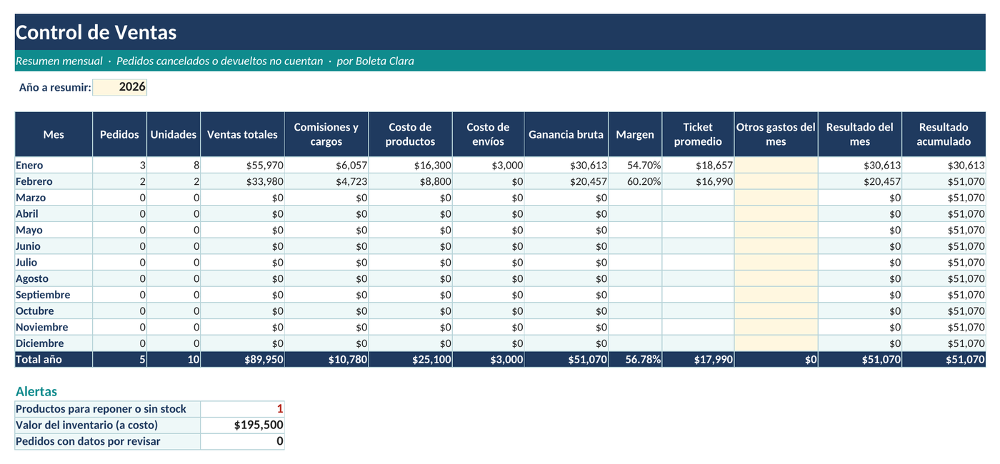
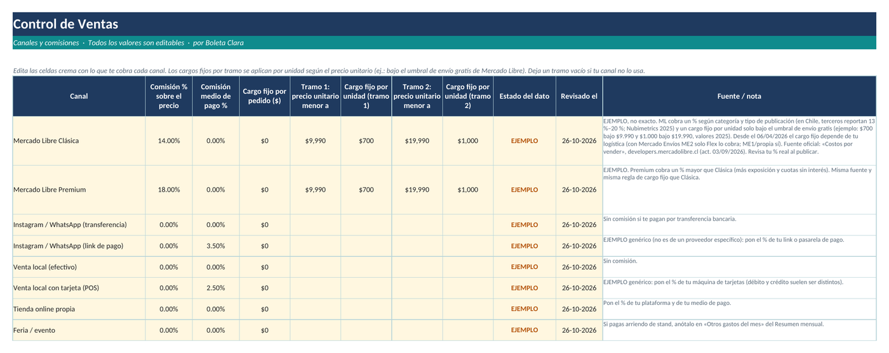
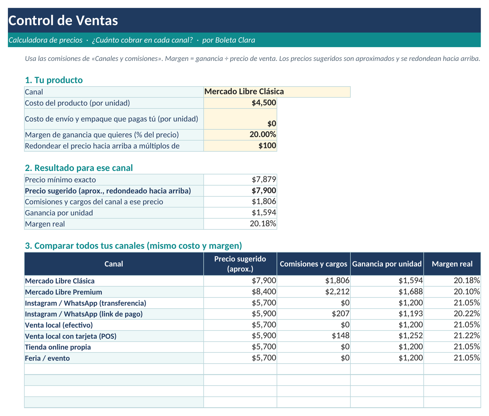

Boleta Clara › Control de Ventas
Control de Ventas: planilla Excel para tu tienda online
Actualizado: 1 de noviembre de 2026 · Para Excel (también abre en LibreOffice Calc)
Si vendes por Mercado Libre, Instagram o WhatsApp y en persona, y llevas tus pedidos, tu stock y las comisiones de cada canal en Excel, esta planilla ordena todo en un solo archivo: ves cuánto ganas de verdad en cada venta, qué producto reponer y a qué precio vender.
Precio de lanzamiento: US$5 (después, US$7), con descarga inmediata en Gumroad. Comprar Control de Ventas
¿Quieres probar primero? Descarga el registro de pedidos gratis: pedidos y totales por mes.
Qué resuelve
Cuando vendes por varios canales, el precio de venta no es lo que te queda. Cada canal cobra su comisión, hay costos de pago y de envío, y el stock se mueve en cada pedido. Con Control de Ventas anotas cada pedido y la planilla calcula el resto.

Qué incluye
- Registro de pedidos con comisiones del canal, costo y ganancia real de cada venta.
- Inventario con alerta «Reponer» o «Sin stock» y registro de compras que suman al stock.
- Canales y comisiones 100 % editables: porcentaje de comisión, comisión del medio de pago y cargo fijo, con valores de ejemplo revisados el 26-10-2026.
- Calculadora de precios: el precio mínimo por canal para el margen que quieres (redondeado hacia arriba, aproximado).
- Resumen mensual y por canal para ver en qué canal y en qué mes ganas más.


Sobre las comisiones de Mercado Libre
Los porcentajes y cargos fijos de Mercado Libre que trae la planilla son valores de ejemplo, no cifras oficiales: cambian según la categoría y el tipo de publicación, y Mercado Libre los actualiza. Revisa siempre los costos reales en tu cuenta y edita los valores en la hoja «Canales y comisiones» antes de usar los resultados.
Para quién es
Para emprendedores y pequeños vendedores online en Chile que hoy llevan sus ventas en una hoja de Excel y quieren dejar de calcular a mano comisiones, stock y márgenes. Si en cambio emites boletas de honorarios, mira las planillas para independientes.
Elige tu versión. Control de Ventas completo (US$5 de lanzamiento) · Registro de pedidos gratis (US$0+)
El pago se hace en USD vía Gumroad, con tarjeta y de forma segura; tu banco hace la conversión.
Preguntas frecuentes
¿Con qué programas funciona?
Está hecha para Microsoft Excel y también abre en LibreOffice Calc.
¿Las comisiones de Mercado Libre vienen actualizadas?
Los porcentajes y cargos fijos que trae la planilla son valores de ejemplo, revisados el 26-10-2026. Las comisiones cambian según categoría y tipo de publicación: revisa tu cuenta y edita los valores en la hoja «Canales y comisiones».
¿Puedo usar otros canales de venta?
Sí. Los canales y comisiones son 100 % editables: puedes cambiar los porcentajes, los cargos fijos y agregar los canales que uses, como Instagram o WhatsApp, venta en persona o tu propia tienda.
¿Qué incluye la versión gratis?
Un registro simple de pedidos con totales por mes. La versión completa agrega comisiones, costos, inventario, calculadora de precios y resúmenes por mes y por canal.
¿Es asesoría contable o tributaria?
No. Es una herramienta de organización. Revisa siempre la información vigente con tu contador o en sii.cl.